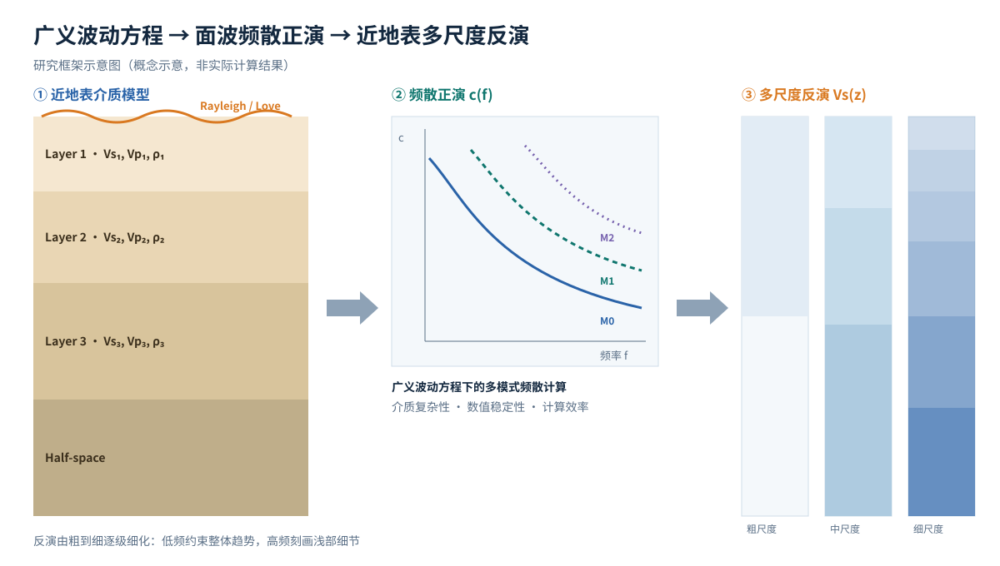

广义波动方程
- 复杂近地表介质的波动方程描述
- 面波传播机理分析
- 模型假设与适用条件
Surface-Wave Dispersion · Generalized Wave Equation · Near-Surface Inversion
控制科学与工程博士研究生 · 地球物理 × 信息科学交叉
我的研究聚焦于广义波动方程框架下的面波频散正演计算，以及面向近地表结构的多尺度反演方法。希望借助信息科学中的建模、优化与计算方法，让面波数据更稳定、更高效地转化为可信的浅地表速度结构。
About
我是张成方，北京化工大学信息科学与技术学院控制科学与工程专业博士研究生，导师为邱宪波老师。
我的研究方向是地球物理与信息科学的交叉领域。博士论文（暂定）题目为《广义波动方程下面波频散正演与近地表多尺度反演方法研究》，关注面波在复杂近地表介质中的频散特征计算，以及如何利用多尺度策略提升速度结构反演的稳定性与分辨率。
Research Directions
Method Pipeline
Ph.D. Thesis (Tentative)
论文以广义波动方程为理论基础，研究面波频散的正演计算方法，并在正演基础上发展近地表多尺度反演方法，形成从理论建模到结构重建的完整技术路线。
右图为研究框架概念示意。

Education & Publications
控制科学与工程 博士研究生
Ph.D. student in Control Science and Engineering, College of Information Science and Technology, Beijing University of Chemical Technology
科研助理
Research Assistant, College of Information Science and Technology, Beijing University of Chemical Technology
硕士
M.Eng. in Control Science and Engineering, Beijing University of Chemical Technology
本科
B.Eng. in Automation, Beijing University of Chemical Technology
作者列表 待补充
DOI 链接 待补充作者列表 待补充
DOI 链接 待补充Contact
如果你对面波频散正演、近地表结构反演或地球物理与信息科学的交叉研究感兴趣，欢迎联系我。